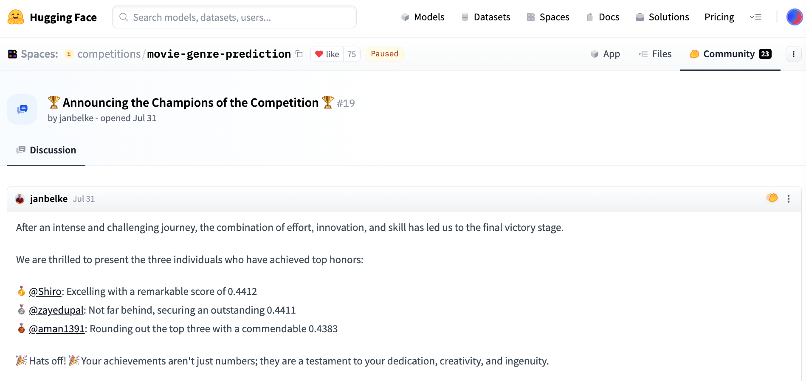

Hugging Face Competition: Movie Genre Prediction
Back in mid-2023, I took on the challenge of an NLP competition on Hugging Face and was honored to secure the second place! This post is my way of sharing the journey, from the initial process to the final code-base, with the hopes of inspiring and assisting others on their own NLP endeavors.

TLDR:
- Generated embeddings using flan-t5-xxl, flan-t5-xl using this file HF_movie_genre_flan_t5_embedding_generation
- Generated embeddings using sentence-transformer using this file HF_movie_genre_sentence_transformer_embedding_generation
- Classified the embeddings using Logistic Regression and then combined the predictions using soft voting. Here is the file: genre_prediction_embedding_prediction
- While running prediction, cleanup is set to False when we have the cleaned up file already. If we don't have the cleaned embeddings (duplicates removed), you'll need to set cleanup True and also need to mention the output cleanup_csv file path. Basically, we use the cleaned csv for the final prediction.
Details:
Basic Data Analysis:
From the basic analysis, it was clear that the dataset was balanced, no missing values. However, there were duplicates based on the movie name and synopsis (discussed it later).
Feature selection:
I used only the synopsis first and later concatenated movie name and synopsis in a single text. Combining them increased the evaluation accuracy.
Removing Duplicates:
To remove duplicates, I used sentence-transformer to calculate the cosine similarity between movie name and synopsis with genre. Then I kept the most similar one.
My approach:
- I tried out different pre-trained models for generating text embeddings.
- Classified those embeddings using different models (used scikit learn for easy model building).
- Finally, combined the predictions through soft voting (average of the predicted
probabilities to
select class) from each of those classifiers.
The model that won the second place:
- Embeddings generated using - 1. sentence-t5-xxl, 2. flan-t5-xxl, 3. flan-t5-xl.
- Model used - Logistic Regression with saga solver. All the other parameters remained at the
default
values specified by scikit-learn.
The model that has the best private score:
Everything was similar to the previous model, except I also addedhttps://huggingface.co/hkunlp/instructor-xl for embedding generation. Learnings and Observations
- Simple Logistic Regression worked better than Random Forest, MLP, Decision Tree, SVM.
- MTEB leaderboard has been a huge help in choosing different models for text embedding generation.
- MMLU and RTE benchmarks also helped a lot.
- I used simple 70:30 split on the training data to evaluate the models. I should've done k-fold for better selection of the models.